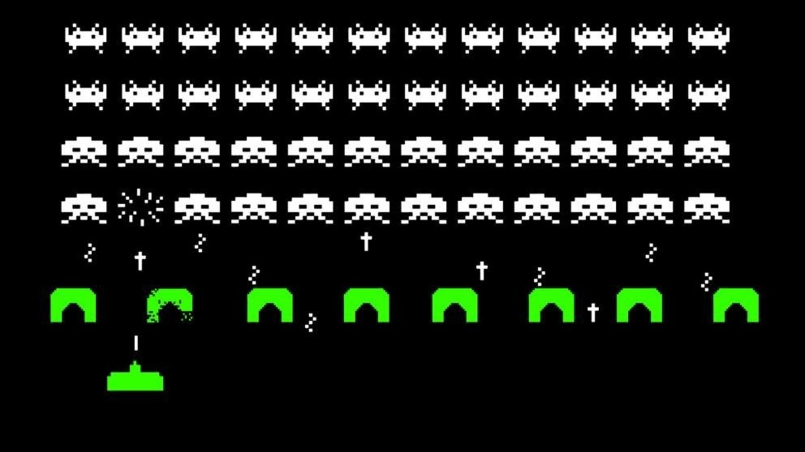
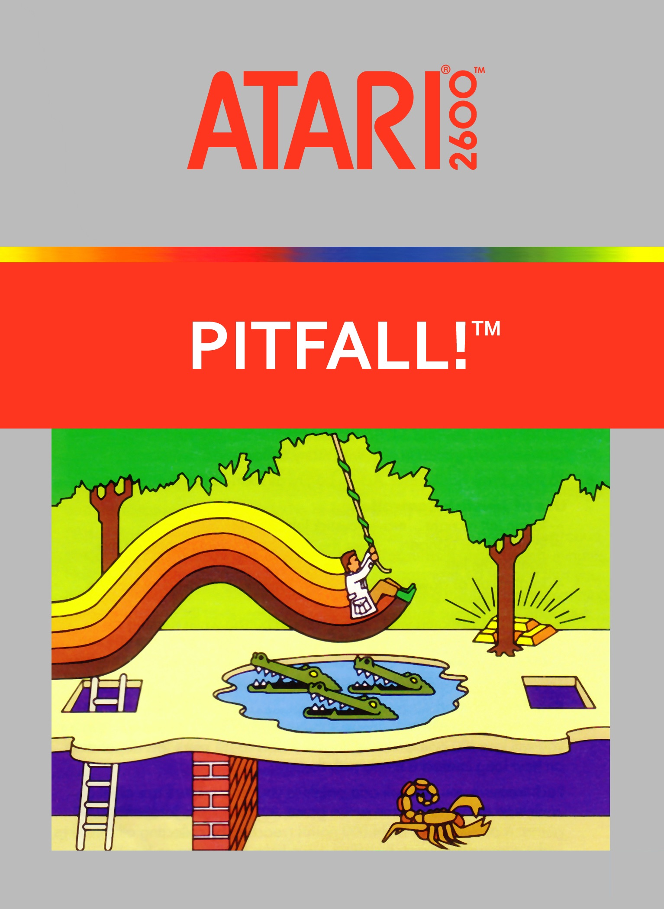

El Atari 2600 fue lanzado en 1977 y es considerado el padre de los videojuegos domésticos modernos. Fue la primera consola en popularizar los cartuchos intercambiables y llevó los juegos de arcade al hogar de millones de personas.
Con su joystick icónico y su paleta de colores limitada, el Atari 2600 es el origen de todo lo que amamos en los videojuegos.

El juego que hizo famosa a la consola. Aliens en formación, un cañón en la base y el simple objetivo de sobrevivir. Eterno desde 1978.

Harry saltando por la selva en una de las primeras aventuras de plataformas. Un juego que demostró de lo que el Atari 2600 era capaz.
El famoso comecocos llega al Atari. Aunque la versión fue criticada por sus diferencias con el arcade, vendió millones y es parte de la historia.